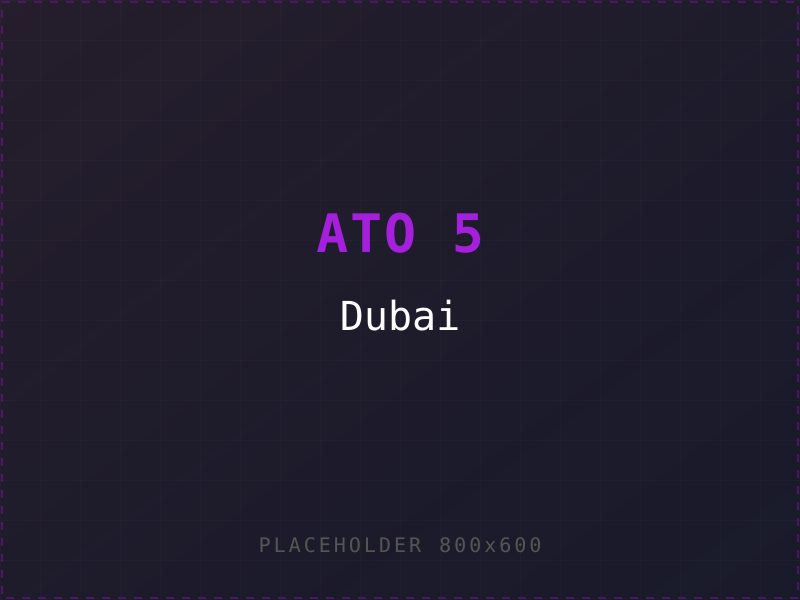
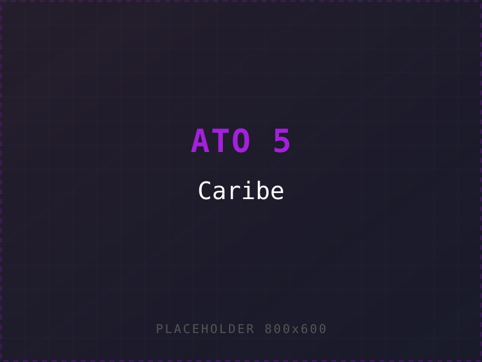
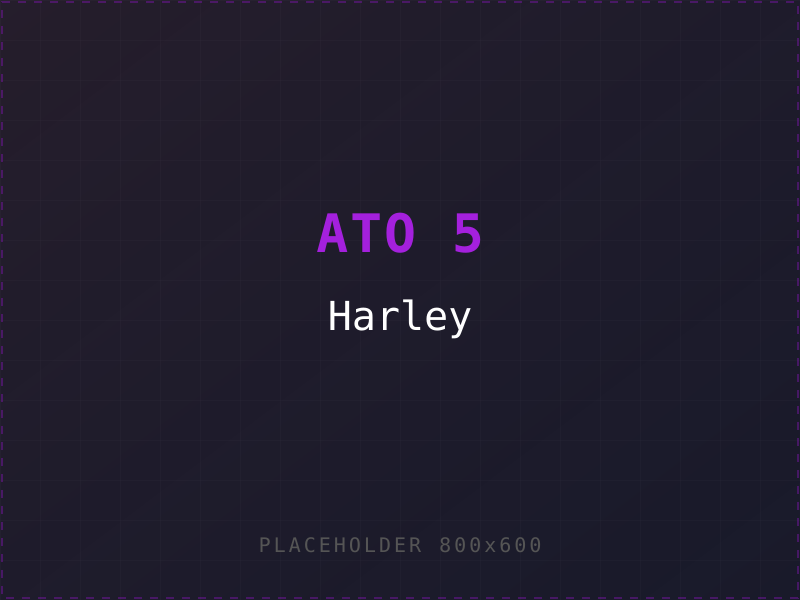
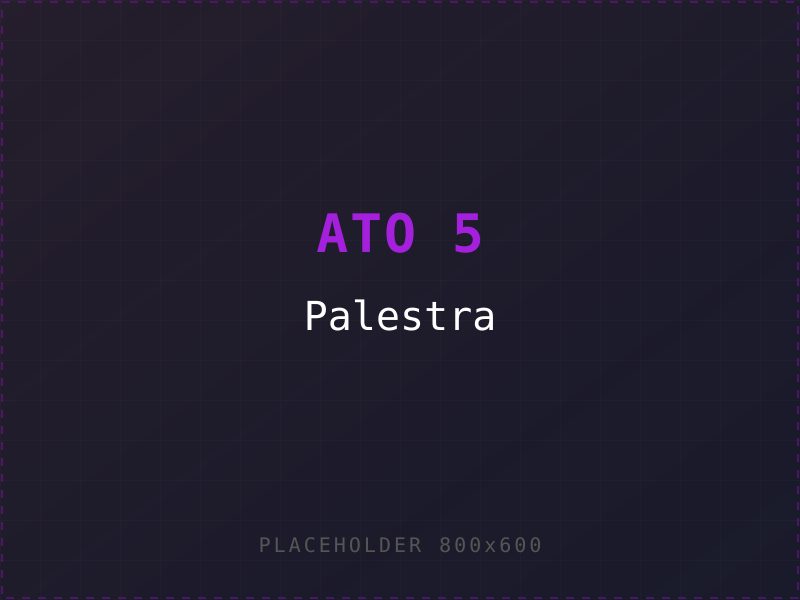
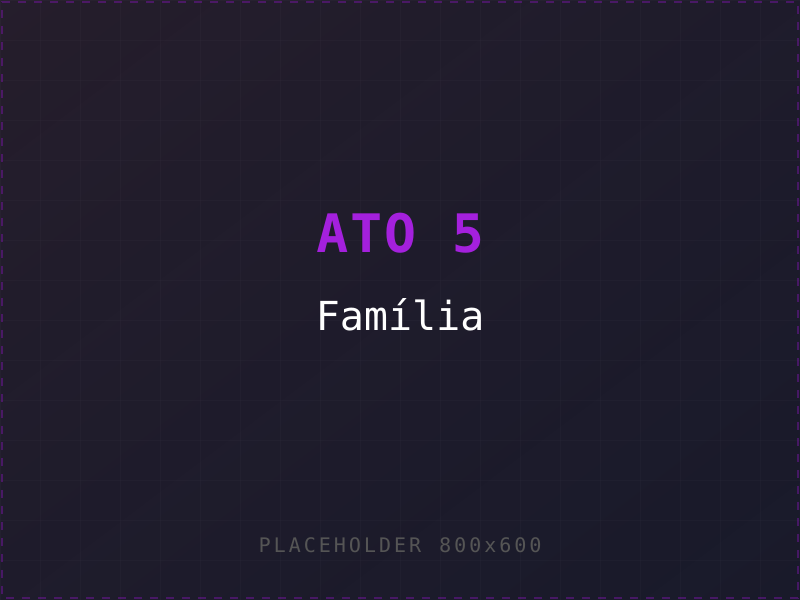
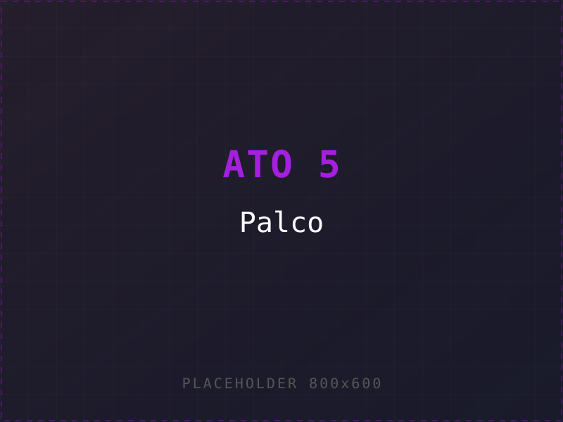

E arrebentei todas. 5 atos. 5 vozes que silenciei dentro de mim antes de te ensinar a nomear as suas.
Naquele dia decidi um monte de coisa errada sobre quem eu era. Levei a bagagem por anos sem saber. Era a Voz #1 operando: "Tenho que cuidar com o que vão pensar de mim."
A primeira voz a calar.
Tudo começa aqui.
Quando o externo te força
a virar a chave por dentro.
Não era ambição. Era promessa de pai. Foi onde entendi que se eu não virasse a chave por dentro, ela ia pagar por fora. O seu externo é o reflexo do seu interno.
Fui pra uma empresa que ninguém conhecia. Em pouco tempo, virei CMO da segunda melhor de vendas diretas do país em 2024 — atrás só da H******. Era a Voz #5 que silenciei: "Você não é bom o suficiente. Vão descobrir uma hora."
Quando a joia ativa,
você não precisa do aval
de quem te traiu.
A gênese do método.
O dia em que ATIVAR
virou linguagem.
No chão, precisei ATIVAR MEU PODER — não de palco, não de palestra. Pessoal. Real. Foi dessa terceira onda que nasceu o método. Era a Voz #7 calando: "Você precisa de permissão pra SER." Eu parei de pedir.
Família estruturada · Sellect rodando · AURA em sua 2ª turma · marca Augustto Leão consolidada · Dubai · Caribe · Harley · palestras nacionais · 100k+ pessoas treinadas · R$100M+ movimentados · ex-CMO #2 do país. Você não precisa virar o "Augustto". Você precisa virar VOCÊ — completo.






Nem o mercado · nem a sua família · nem você de manhã no espelho.
Por isso o ASP existe — pra você parar de parecer um.
"Você é o que pensa."